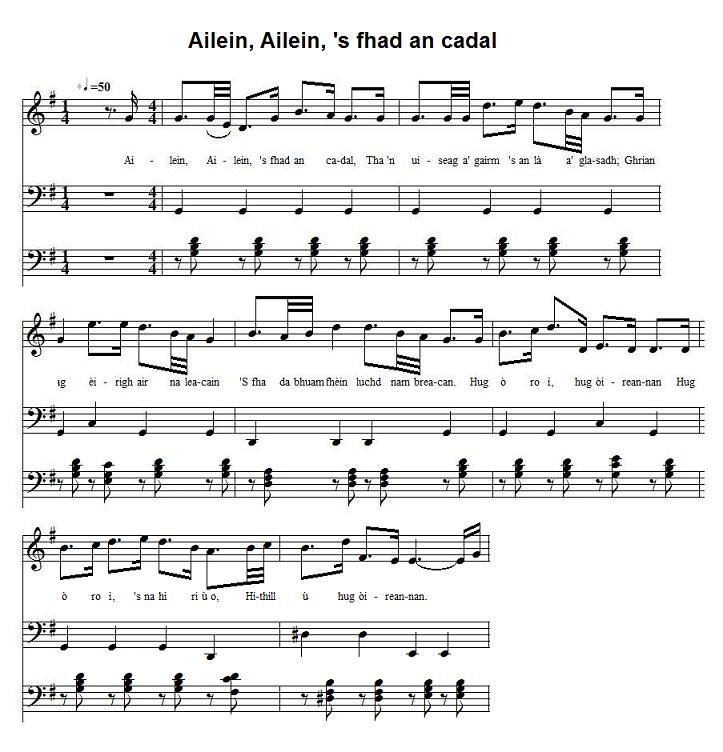

Ailein, Ailein, 's fhad an cadal
Landing of Prince Charles Edward Stewart on the shore of Eriskay on the 23rd July 1745
Le Prince Charles Edouard Stuart débarque à Eriskay le 23 juillet 1745
le Alasdair mac Mhaighstir Alasdair- by Alexander McDonald (1695-1770)
As sung by Rev. William Matheson and recorded by James Ross on 14thMay 1958 in EdinburghTune - Mélodie
"Ailein, Ailein, 's Fhada an Cadal"
Sequenced by Christian Souchon

|
To the tune: The tone background to this page is the Midi transcription of the singing of Rev. William Matheson recorded on 14th May 1958 by James Ross. The record is in the collection of the School of Scottish Studies . Other particulars will be found at the following Internet address: www.tobarandualchais.co.uk/fullrecord/88118/1 There is another song, a waulking song (12 single line verses with refrain between each verse), "Ailein, Ailein 's Fhad' an Cadal" which has no Jacobite import, and only expresses a girl's longing to be with Alan (Ailean). She says that he has been asleep too long and that it's a long time since she prepared his bed. This noise which awakes her is pleasing to her ears; Clan Iain [Johnston], with their good humoured band, going to meet the new lady. She was in Islay and in Assynt and in Lewis where the women waulk the cloth with their hands and the young men with their feet. A variant of this song was used by Alexander McDonald to accommodate his own poem. "Ailean" could refer to "Mac'Ic Ailein", the patronymic of McDonald chief of ClanRanald. His son, Ranald, Younger of ClanRanald, was to play an outstanding part in the 1745. Permanent link: www.tobarandualchais.co.uk/fullrecord/19294/1 To the lyrics A gathering song in support of Prince Charles Edward Stuart. The clans are being urged to rise up again and save Scotland from the 'beast'. The prince is being referred to by his code name Mòrag. In spite of its exhaustivity John Lorne Campbell's collection "Highland Songs of the Forty-Five" does not include this poem (first edition 1933, last reprinted 1997). Iain Mac-Choinnich (John McKenzie) does not ascribe this song to any author in his "Eachdraidh a' Phrionnsa, no Bliadhna Theàrlaich" (1844, p.300). |
A propos de la mélodie: Le fond sonore de cette page est la transcription Midi du chant interprété par le Rév. William Matheson et enregistré le 14 mai 1958 par James Ross. L'enregistrement est conservé par la School of Scottish Studies . On trouvera d'autres détails à l'adresse Internet: www.tobarandualchais.co.uk/fullrecord/88118/1 . Il existe un chant de foulage (12 couplets d'un seul vers avec refrain après chaque vers) avec le même incipit "Ailein, Ailein 's Fhad' an Cadal", mais sans contenu Jacobite: une femme y chante son désir d'être auprès d'Alain (Ailean), lequel a suffisamment dormi. Il y a longtemps qu'elle lui a fait son lit. Le bruit qui la réveille est mélodieux à ses oreilles: C'est le Clan Johnston et sa joyeuse bande qui vient à la rencontre de la nouvelle mariée. Elle a parcouru les îles d'Islay, d'Assynt et Lewis où les femmes foulent la toile avec les mains et les jeunes hommes avec les pieds. C'est une variante de ce chant qu'Alexandre McDonald a utilisée pour son propre poème. "Ailean" pourrait désigner "Mac'Ic Ailein", appellatif de McDonald, chef de CanRanald. Son fils, Ranald, Ainé de ClanRanald, allait jouer un rôle essentiel dans le soulèvement de 1745. Lien permanent: www.tobarandualchais.co.uk/fullrecord/19294/1 A propos des paroles Ce chant est un "chant de rassemblement" en faveur du Prince Charles Edouard Stuart. Les clans sont invités à reprendre les armes et à tirer l'Ecosse des griffes de la "Bête". Le Prince est désigné par le nom cryptique de "Morag" (Marion). En dépit de son caractère exhaustif le recueil de John Lorne Campbell "Chants des Highlands de 1745" ignore le présent poème (1ère édition en1933, dernière réimpression en 1997). Iain Mac-Choinnich (John McKenzie) n'indique aucun nom d'auteur pour ce chant dans son "Eachdraidh a' Phrionnsa, no Bliadhna Theàrlaich" (1844, p.300). |

|
ALAN, ALAN, TOO LONG YOU SLEEP by Alexander McDonald CHORUS: Hug ò ro ì, hug ye shepherds Hug ò ro ì, 's na hì ri ù o, Hithill ù hug ye shepherds. 1. Alan, Alan, too long you sleep! The skylark prompts the day to dawn; The sun is rising o'er the pines. It's time your tartan you put on! 2. Dark Alan, be not stubborn, rise! Already gathered is your clan. Great Scotland, to the Beast in thrall, To protect her needs a brave man. 3. Fair Morag, you won't distress them: To see them repudiate I loath Their offspring deprived of their rights In Britain and in Ireland both. 4. O Mòrag, whoever sees you Along Edinburgh's causeway ride, Will thrill at the beautiful view. Even the dead from their graves rise. Source: Mac Mhaighstir Alasdair, The Ardnamurchan Years by Ronald Black, published by The Society of West Highland and Island Historical Research, 1986 Translated by Christian Souchon (c) 2015 |
AILEIN, AILEIN, 'S FHAD AN CADAL le Alasdair mac Mhaighstir Alasdair Sèist: Hug ò ro ì, hug òireannan Hug ò ro ì, 's na hì ri ù o, Hithill ù hug òireannan. 1. Ailein, Ailein, 's fhad an cadal, Tha 'n uiseag a' gairm 's an là a' glasadh; Ghrian ag èirigh air na leacain 'S fhada bhuam fhèin luchd nam breacan. 2. Ailein duinn, gabh sgoinn 's bi 'g èirigh Tional do chlann, cuimhnich d' fheum orm; Bidh Alba mhòr fo bhinn bhèistean Mur a dìon a muinntir fhèin i. 3. Bheir iad Mòrag mhìn air èiginn 'S eagal leam gun dèan i gèilleadh 'S gum bi sliochd gun an còir fhèin ac' De Bhreatainn mòr, no de dh'Èirinn. 4. Mhòrag, nam faicinn d' fhear-ceusaidh, Ge b' ann air cabhsair Dhùn Èideann, Thairginn na lainn chaola, gheura, 'S dh'fhàgainn fhèin e marbh gun èirigh. Tàrmachadh: Mac Mhaighstir Alasdair, The Ardnamurchan Years le Raghnall Mac Ille Dhuibh, air fhoillseachadh le The Society of West Highland and Island Historical Research, 1986. |
ALAIN, ALAIN, QUITTE TON RÊVE d'Alexandre McDonald Refrain: Hug ò ro ì, hug òireannan Hug ò ro ì, 's na hì ri ù o, Hithill ù hug òireannan. 1. Alain, Alain, quitte ton rêve; L'alouette acclame le jour; Le soleil à l'orient se lève; Mets ton tartan à ton tour. 2. Alain le brun, en vain tu boudes Ton clan déjà réuni. En Ecosse la Bête rode: Il faut que tu prennes parti. 3. Belle Marion, n'abandonne Pas les tiens à leur prison: Pour leurs enfants prends la couronne De l'Irlande et d'Albion. 4. Marion, la vue de ton cortège Dans l'avenue d'Edimbourg Réjouira plus d'un, les morts mêmes Voudront saluer ce jour. Source: Mac Mhaighstir Alasdair, The Ardnamurchan Years par Ronald Black, publié par la Society of West Highland and Island Historical Research, 1986 Traduction Ch. Souchon (c) 2015 |
| Click to know more about CLAN DONALD |